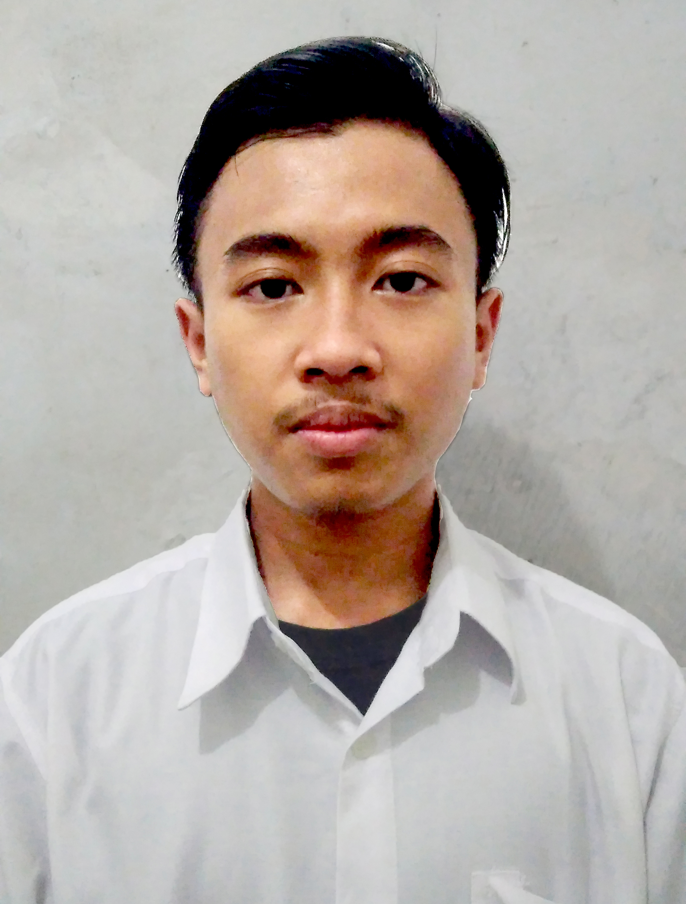

CURRICULUM VITAE
DATA PRIBADI

- Nama : Maulana Zakki Firmansyah
- TTL : Depok, 19 September 2002
- Alamat : Jl.H.Endek No.33A Beji, Kota Depok
- Status : Mahasiswa
- Jurusan : Sistem Informasi
- Angkatan : 2020
- No. Telp : 089693600716
- Email : zakkialhafidz70@gmail.com
PROFIL
Assalamu'alaikum Wr.Wb.
Perkenalkan nama saya Maulana Zakki Firmansyah.
Saya adalah Mahasiswa Sistem Informasi STT Terpadu Nurul Fikri Tahun 2020.
Ketika ingin mewujudkan apa yang kita cita-citakan perlu adanya sebuah usaha.
Yaitu dengan belajar, selain belajar kita juga harus menyeimbanginya dengan do'a.
Do'a, Usaha, Tawakal, Ikhtiar adalah kunci mencapai kesuksesan
PENDIDIKAN
| Nomor |
Nama Sekolah |
Jurusan |
Tahun Lulus |
| 1. |
SD Negeri Beji Timur 1 |
- |
2008-2014 |
| 2. |
SMP Muhammadiyah 1 Depok |
- |
2014-2017 |
| 3. |
SMK Putra Bangsa |
Multimedia |
2017-2020 |
| 4. |
Sekolah Tinggi Teknologi Terpadu Nurul Fikri |
Sistem Informasi |
2020-sekarang |
PENGALAMAN KERJA
- Graphic Designer ( Januari 2019 - Maret 2019 )
CV.Area Percetakan
- Arsipis Dokumen ( Juni 2020 - Juli 2020 )
Kementerian Pertanian Badan Penyuluhan dan Pengembangan SDM Pertanian
- Mentor Tahsin & Tahfidz ( 2020 - Sekarang )
SMK Muhammadiyah 1 Depok
KETERAMPILAN
- Microsoft Office ( Word, Excel, Power Point )
- Software Design ( CorelDraw, Adobe Photoshop, Adbe Ilustrator )
- Mampu bekerja individu ataupun tim